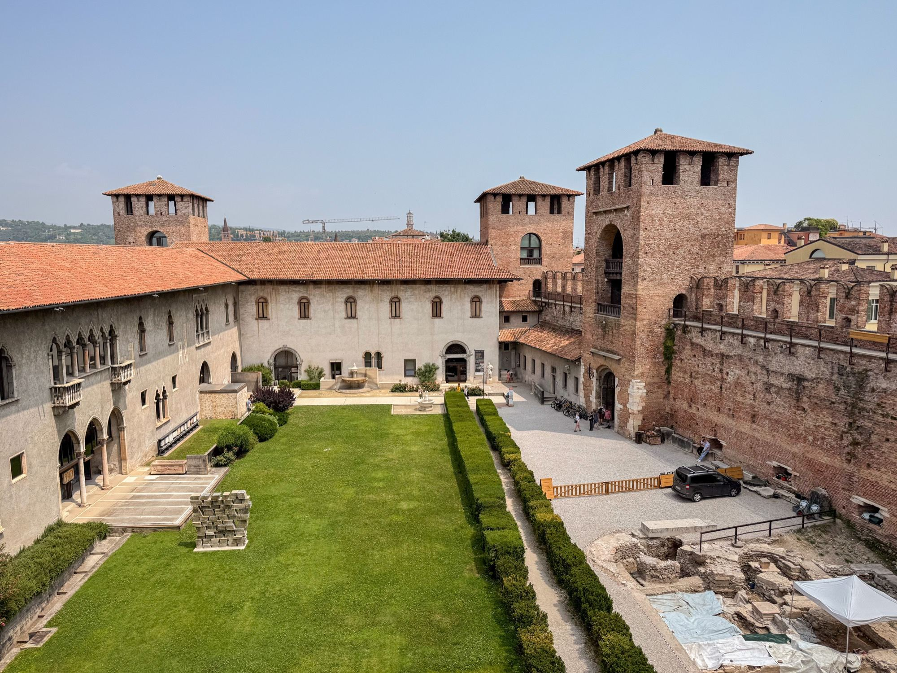

Landscape archaeology · GIS
Scaliger Castle Viewsheds
An award-winning spatial study asking what 12 late medieval fortifications could see—and what visibility meant for power.
The question
Castle scholarship has long moved between defensive and symbolic interpretations of fortified landscapes. This study examined fortifications associated with the Della Scala lords of Verona to test how visibility modelling might sharpen—or complicate—those interpretations.

Approach
I used viewshed, cumulative visibility, and randomized spatial analyses to compare modeled visual relationships with claims in medieval castle literature. The work combined digital terrain modelling with a critical reading of how visibility becomes social meaning.
Recognition
The project received UCSB’s Award for Research Promise and first place among lightning talks at the 2nd Annual UCSB Anthropology Research Symposium.